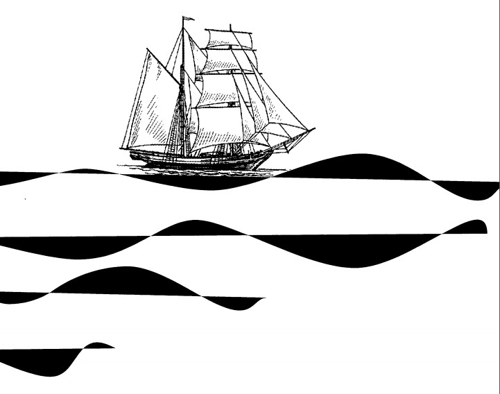

Nếu bạn tìm kiếm hòn đảo nhỏ Tana Masa trên bản đồ, bạn sẽ thấy nó nằm ngay trên xích đạo, cách Sumatra không xa về phía Nam; nhưng nếu bạn ở trên boong chiếc Kandong Bandoeng và hỏi J. van Toch, thuyền trưởng chiếc tàu, xem ông ta nghĩ gì về đảo Tana Masa nơi ta vừa thả neo, hẳn ông ta trước tiên sẽ chửi thề một chặp rồi mới cho bạn biết đó là cái lỗ bẩn thỉu nhất của Quần đảo Sunda, thậm chí còn kinh tởm hơn Tana Bala và rõ ràng là cũng khốn kiếp ngang ngửa Pini hay Banyak. Ông sẽ nói cái thứ tồi tệ duy nhất gọi là con người sống ở đây - tất nhiên không tính lũ dân Batak chấy rận đầy mình - là một tên đại diện thương mại nát rượu, một gã lai hai dòng máu Cuba và Bồ Đào Nha và là một tên trộm, một kẻ tà đạo và một con lợn dơ dáy tởm lợm hơn cả xứ Cuba và toàn bộ giống loài da trắng hợp lại; nếu trên đời này có cái gì khốn kiếp thì đó chính là cuộc sống khốn kiếp trên cái đảo Tana Masa khốn kiếp này đó. Và rồi, có thể là bạn sẽ thận trọng hỏi xem vì cớ gì mà ông ta lại cho thả cái neo khốn kiếp xuống biển cứ như thể ông muốn sống ba ngày khốn kiếp ở đây vậy; nghe thế ông ta sẽ khịt mũi bực tức rồi cằn nhằn gì đó về chuyện đâu có ngu tới mức khốn kiếp mà cho tàu Kandon Bandoeng chạy tuốt tới đây chỉ để lấy mấy thứ dầu dừa hay cùi dừa khô khốn kiếp, mà chuyện này thì dính dáng quái gì tới ngài chớ, tôi còn phải thi hành mấy cái lệnh khốn kiếp đó, và xin vui lòng đừng có chõ cái mũi khốn kiếp của ngài vào chuyện của tôi. Và ông ta sẽ tiếp tục chửi thề lai láng trầm bổng đúng như những gì bạn chờ đợi ở thái độ của một thuyền trưởng viễn dương tuổi không còn trẻ song vẫn đương độ hăng hái.
Nhưng thay vì hỏi đủ thứ chuyện tào lao, nếu bạn để mặc Thuyền trưởng J. van Toch cằn nhằn và chửi thề một mình, có thể rồi bạn sẽ biết được thêm gì đó. Bạn không thấy là ông cần xả hơi sao? Cứ để ông ta yên thì cái tính khí khó chịu ấy tự khắc tiêu tan.
- Chuyện là thế này, ông bạn ơi! [Thuyền trưởng sẽ đột ngột nói.] - Mấy thằng chủ Do Thái khốn kiếp ở tận Amsterdam đó, bỗng dưng tụi nó bảo: ngọc trai mới là thứ đáng kể, phải đi tìm ngọc trai. Thiên hạ hình như đang phát khùng vì ngọc trai ngọc gái gì đó. [Nói tới đây Thuyền trưởng tức tối nhổ nước bọt.] - Đấy, thế là đổ tiền vào ngọc trai! Chính vì bọn các người mà lúc nào cũng có chiến tranh loạn lạc đủ thứ. Chỉ toàn nghĩ đến tiền thôi. Vậy mới gọi là khủng hoảng đó ông bạn.
Thuyền trưởng J. van Toch mất một hồi cân nhắc xem ông có nên bắt đầu làm thêm một tràng chuyện kinh tế chính trị hay không, xét cho cùng vào thời buổi này thiên hạ có nói chuyện gì khác đâu. Có điều, ngoài khơi Tana Masa này, trời quá nóng bức còn người ngợm lại uể oải, nói chuyện đó ở đây mà làm gì, cho nên Thuyền trưởng bèn khoát tay và cằn nhằn:
- Nói thì dễ lắm! Ở Sri Lanka thiên hạ đã vét sạch bách ngọc trai từ năm năm trước, ở Đài Loan người ta đã ra lệnh cấm thu gom ngọc… và thế là tụi nó bảo tôi, Thuyền trưởng van Toch, đi thử coi ông có tìm ra chỗ nào mới để thu gom ngọc không. Đi xuống tận mấy hòn đảo nhỏ khốn kiếp đó đi, biết đâu ông sẽ tìm ra mấy vịnh biển có tùm lum bãi trai sò… [Thuyền trưởng móc chiếc khăn tay màu xanh nhạt ra hỉ mũi đầy khinh bỉ.] - Bọn chó châu Âu đó, chúng cứ tưởng vẫn còn tìm ra được cái gì mà chưa có ai biết tới ở dưới này. Trời, đúng là ngu cả lũ! Không chừng tụi nó còn muốn tôi cạy mõm tụi thổ dân Batak để tìm xem có ngọc nhét trong đó hay không. Vùng trai ngọc mới! Ở Padang có cái nhà thổ mới thì tôi biết, chứ còn vùng trai ngọc mới ư? Mấy hòn đảo này tôi rành quá mà, rành từ Sri Lanka xuống tới tận đảo Clipperton khốn kiếp kia kìa, nếu đứa nào nghĩ là vẫn còn tìm ra được cái gì mới cho tụi nó moi tiền ra thì úi chà, chúc may mắn. Tôi qua lại mấy vùng biển này ba mươi năm rồi, vậy mà giờ lũ ngu kia lại muốn tôi tìm ra cái gì đó mới!
Đây là một công việc sỉ nhục quá mức, khiến Thuyền trưởng van Toch phải hụt hơi.
- Nếu như tụi nó muốn há mõm ngạc nhiên thì sao không sai một thằng gà mờ nào đó đi tìm quách cho rồi; thế mà lại trông mong một người thạo cả khu vực như Thuyền trưởng J. van Toch này đi làm việc… Thật không sao hiểu nổi. Ở châu Âu thì may ra vẫn còn cái gì đó để khám phá; chứ ở đây… người ta chỉ mò tới đây đánh hơi xem có thứ gì ăn được không, hay thậm chí không cần ăn, chỉ cần tìm ra thứ gì mua bán được. Nếu như ở khắp vùng nhiệt đới khốn kiếp này vẫn còn thứ gì đó đáng giá một đồng xu thì lập tức sẽ có ba tên mại bản đứng đó vẫy mấy cái khăn tay đầy nước mũi chặn tàu bè của bảy quốc gia lại mà bán. Là vậy đó. Nói thật chứ tôi rành mấy vụ này còn cả hơn Bộ Thuộc địa của Nữ hoàng Anh, ông bạn thông cảm giùm nha.
Thuyền trưởng van Toch cố hết sức kiềm chế nỗi uất ức chính đáng của mình, và sau một hồi vận sức thật lâu ông đã thành công.
- Ông có thấy hai thằng ngồi không chó chết kia không? Tụi nó là dân mò trai ngọc ở Sri Lanka đó, nói có trên chứng giám, tụi Sri Lanka này cũng là Trời sinh, nhưng Trời sinh ra chúng làm gì thì tôi chẳng hiểu nổi. Tôi cho hai thằng đó lên tàu đi cùng, và khi bọn tôi tìm ra bất kỳ khúc bờ biển nào không có đánh dấu của Agency hay Bata hay Thuế quan thì chúng sẽ lặn xuống biển mò trai. Cái thằng chó chết nhỏ con kia, nó có thể lặn sâu tám chục thước; ở quần đảo Princes nó lặn tới chín chục thước để lượm cái tay quay của máy quay phim. Nhưng ngọc trai ư? Không hề! Một tí ti cũng không có! Cái đám ăn hại chó chết, bọn Sri Lanka này. Và đó là cái việc chó chết mà tôi phải làm đó ông bạn. Giả vờ thu mua dầu dừa nhưng lúc nào cũng tìm kiếm những vùng trai ngọc mới. Sắp tới dám tụi nó muốn tôi tìm cho chúng một lục địa trinh nguyên lắm, há! Đây có phải công việc dành cho một thuyền trưởng lương thiện của ngành hải thương đâu ông bạn. Thằng J. van Toch này có phải thứ bạt mạng chó chết đâu chứ! Không hề!
Và ông ta cứ thế nói không ngừng; biển rộng thênh thang và thời gian bao la không giới hạn; có phỉ nhổ xuống biển thì nước cũng chẳng dâng cao lên, anh bạn ạ, có chửi rủa số phận thì cũng chẳng thay đổi được gì; chỉ là, sau nhiều sự chuẩn bị vòng vo, cuối cùng ta cũng đi tới được thời điểm mà J. van Toch, thuyền trưởng chiếc tàu Hà Lan Kandong Bandoeng , sẽ thở dài bước xuống thuyền nhỏ đi tới đảo Tana Masa nơi ông ta thương lượng với tên nát rượu mang hai dòng máu Cuba và Bồ Đào Nha về một vài chuyện làm ăn nào đó.
- Xin lỗi Thuyền trưởng, - cuối cùng gã lai Cuba - Bồ Đào Nha lên tiếng - nhưng trên đảo Tana Masa này có trai sò gì đâu. Đám dân Batak ở đây thậm chí còn ăn cả sứa, - với vẻ kinh tởm vô bờ hắn cho ông biết - đám này ở dưới nước nhiều hơn ở trên cạn, đàn bà ở đây thì hôi tanh như cá, ông không tưởng tượng nổi đâu… mà tôi đang nói gì thế nhỉ? À, đúng rồi, ông đang hỏi về bọn đàn bà.
- Mà quanh đây chẳng còn một khúc bờ biển nào không có bọn Batak lặn hụp dưới nước sao?
Thuyền trưởng hỏi. Gã lai Cuba - Bồ Đào Nha lắc đầu.
- Không có đâu. Trừ phi ông tính cả Vịnh Quỷ Sứ, nhưng ông sẽ không thích vậy đâu.
- Sao lại không?
- Là vì… không ai được phép tới đó. Làm ly nữa nhé, thưa Thuyền trưởng?
- Cám ơn. Ở đó có cá mập à?
- Cá mập và thêm đủ thứ khác, - gã lai lầm bầm. - Chỗ đó ghê lắm, thưa Thuyền trưởng. Dân Batak không muốn thấy ai mò xuống đó.
- Sao lại không?
- Dưới đó có nhiều quỷ quái, thưa Thuyền trưởng. Quỷ biển đó.
- Quỷ biển là cái thứ gì chứ? Một loại cá?
- Không phải cá, - gã lai chỉnh lại. - Đúng là quỷ, Thuyền trưởng. Những con quỷ dưới nước. Dân Batak gọi chúng là “tapa”. Tapa. Chúng nó bảo mấy con quỷ đó có cả thành phố bên dưới. Làm ly nữa nhé?
- Thế trông chúng ra làm sao, lũ quỷ biển đó?
Gã lai Cuba - Bồ Đào Nha nhún vai.
- Trông như quỷ sứ chứ sao, thưa Thuyền trưởng. Có lần tôi thấy một con… thật ra chỉ thấy cái đầu nó thôi. Lúc đó tôi đang chèo thuyền từ Mũi Haarlem về… và bất thình lình, ngay trước mặt, một cái gì đó thù lù trồi lên mặt nước. - Thế nó giống cái gì?
- Nó có một cái đầu… giống đầu người Batak đó, thưa Thuyền trưởng, nhưng trụi lủi không có tóc.
- Chắc chắn không phải là một tên Batak chứ?
- Không phải tên Batak nào cả, thưa Thuyền trưởng. Ở chỗ đó đám Batak không đứa nào dám xuống nước đâu. Và rồi… cái thứ quỷ quái đó nháy mắt với tôi mà mi mắt nó nằm ngược ở dưới. - Gã lai rùng mình khiếp đảm. - Cái mi nằm dưới mắt nâng lên che kín cả con mắt. Đó là một con tapa.
Truyền trưởng J. van Toch xoay xoay ly rượu dừa giữa những ngón tay múp míp.
- Thế lúc đó anh có uống rượu không đấy? Lúc đó anh không say đấy chứ?
- Say chứ sao không, thưa Thuyền trưởng. Không say làm sao tôi dám chèo vào chỗ đó. Đám Batak không thích khi có người… có người quấy rầy lũ quỷ đó.
Thuyền trưởng van Toch lắc đầu.
- Thôi đi, thế thì làm gì có quỷ. Mà nếu có thì chúng sẽ trông giống bọn châu Âu. Nhất định là anh đã nhìn thấy một loại cá gì đó rồi.
- Cá! - Gã lai Cuba - Bồ Đào Nha nói lắp bắp. - Cá đâu có hai bàn tay, Thuyền trưởng. Tôi đâu có ngu như dân Batak, tôi có đi học đàng hoàng ở Badyoeng… Không chừng tôi vẫn còn thuộc mười điều răn và mấy chuyện đã được khoa học chứng minh; mà người có học thì biết phân biệt con quỷ với con vật chứ. Cứ hỏi đám Batak thì rõ thôi, thưa Thuyền trưởng.
-Trò mê tín của bọn mọi, Thuyền trưởng tuyên bố với giọng hoan hỉ đoan chắc của người có học. - Chuyện bá láp phi khoa học. Dù gì thì quỷ đâu có sống dưới nước. Nó làm gì dưới nước chứ? Anh đừng có nghe mấy chuyện bá láp của bọn dân địa phương, anh bạn. Có ai đó đã đặt tên chỗ đó là Vịnh Quỷ Sứ và kể từ đó dân Batak đâm ra sợ hãi. Chỉ vậy thôi, Thuyền trưởng tuyên bố và nện bàn tay múp míp xuống mặt bàn. - Ở đó chẳng có gì đâu, anh bạn, theo tinh thần khoa học thì hiển nhiên là thế.
- Có chứ, thưa Thuyền trưởng, - gã lai đã từng đi học ở Badyoeng khẳng định. - Nhưng người có hiểu biết thì chẳng ai mất công mò tới Vịnh Quỷ Sứ làm gì cả.
Thuyền trưởng J. van Toch đỏ bừng mặt.
- Thì sao nào? ông quát. - Đồ Cuba dơ dáy, mày tưởng tao sợ mấy con quỷ đó à? Để rồi coi, ông vừa nói vừa nhấc cái thân hình một trăm cân lương thiện của mình đứng lên. - Tao không mất thì giờ với mày ở đây nữa trong khi tao còn công chuyện phải lo. Nhưng hãy nhớ điều này; ở các thuộc địa của Hà Lan không có con quỷ nào cả; nếu có thì ở bên thuộc địa của tụi Pháp. Đó, chắc là ở bên đó. Còn bây giờ thì kêu tên Thị trưởng đứng đầu cái đảo khốn kiếp này tới đây nói chuyện với tao.
Loáng một cái là tìm ra ngay vị chức sắc vừa nhắc ở trên; hắn đang ngồi xổm nhai mía cạnh tiệm buôn của gã lai. Đó là một quý ngài đứng tuổi, trần truồng, gầy hơn nhiều so với các đồng nghiệp ở châu Âu. Sau lưng hắn, cách một khoảng đúng phép tắc, cả làng cũng đang ngồi xổm, đầy đủ đàn bà và trẻ con. Rõ ràng là họ đang mong chờ được quay phim.
- Giờ nghe tôi nói đây, anh bạn, Thuyền trưởng van Toch nói với hắn bằng tiếng Mã Lai (thà ông nói với hắn bằng tiếng Hà Lan hay tiếng Anh còn hơn bơi vị chức sắc Batak khả kính này không biết một chút tiếng Mã Lai nào, và mọi lời Thuyền trưởng nói đều được gã lai Cuba - Bồ Đào Nha thông ngôn qua tiếng Batak, nhưng vì lý do nào đó Thuyền trưởng thấy rằng dùng tiếng Mã Lai là thích hợp hơn cả.) - Giờ nghe tôi nói đây, anh bạn, tôi cần vài trai tráng to con, khỏe mạnh đi biển với tôi một chuyến. Có hiểu tôi muốn nói gì không? Đi biển một chuyến.
Gã lai thông dịch câu đó và thị trưởng gật gù cái đầu tỏ ra hiểu biết, rồi hắn quay lại đôi diện với cử tọa đông đảo hơn đang ngồi kia và nói gì đó, rõ ràng là họ hết sức nhiệt tình đón nhận tin tức. Gã lai thông dịch lại:
- Tên cầm đầu của họ nói là cả cái làng này sẽ đi với ngài Thuyền trưởng đến bất cứ nơi nào Thuyền trưởng muốn.
- Hay lắm. Thế thì bảo họ là sẽ đi mò trai ở Vịnh Quỷ Sứ.
Tiếp theo là khoảng mười lăm phút bàn cãi náo nhiệt cả làng cùng tham gia, đặc biệt là đám các bà già. Cuối cùng gã lai quay sang Thuyền trưởng.
Họ nói không thể đi tới Vịnh Quỷ sứ được thưa Thuyền trưởng.
Mặt Thuyền trưởng bắt đầu ửng đỏ.
- Sao lại không?
Gã lai nhún vai.
- Vì ở đó có tapa… tapa. Có quỷ, thưa Thuyền trưởng.
Màu đỏ trên mặt Thuyền trưởng dần dần chuyển sang tím tái.
- Vậy thì bảo tụi nó, ờ, nếu tụi nó không chịu đi… tao sẽ nện cho rụng hết răng… tao sẽ vặt sạch tai tụi nó… tao sẽ treo cổ cả đám… và tao sẽ đốt cháy rụi cả cái làng chấy rận này. Hiểu chưa?
Gã lai ngoan ngoãn dịch đúng y những gì Thuyền trưởng nói, và sau đó cuộc bàn cãi càng sôi nổi và kéo dài hơn. Cuối cùng gã lai quay sang Thuyền trưởng.
- Họ nói họ sẽ kiện lên cảnh sát ở Padang, thưa Thuyền trưởng, vì ông đã hăm dọa họ. Đã có quy định như vậy rồi. Tay thị trưởng nói nhất định sẽ không bỏ qua đâu.
Mặt Thuyền trưởng J. van Toch bắt đầu chuyển sang màu xanh.
- Vậy thì nói với nó, - ông gầm gừ, - nói là nó… - và ông nói một tràng suốt mười một phút liền mà không cần ngừng lấy hơi dầu chỉ một lần.
Gã lai vét hết vốn từ vựng hạn hẹp của gã để thông dịch lời Thuyền trưởng; rồi sau cuộc hội ý sôi nổi, lê thê nhưng súc tích của những người Batak, gã lại dịch cho Thuyền trưởng nghe.
Họ nói họ có thể bỏ qua chuyện kiện ông ra tòa, thưa Thuyền trưởng, nếu ông đóng tiền phạt trực tiếp cho chính quyền địa phương. Họ đề nghị…, - nói tới đây gã ngần ngừ, - … hai trăm đồng rupee, thưa Thuyền trưởng; nhưng coi bộ hơi nhiều đó. Trả giá năm đồng thôi.
Nước da của Thuyền trưởng van Toch thình lình nổi lên những đốm đỏ lựng. Đầu tiên ông đòi giết sạch hết dân Batak trên đời này, rồi sau đó ông hạ giá xuống còn ba trăm cú đá đích đáng cho cả lũ, và cuối cùng ông tự bằng lòng với cái giá là sẽ nhồi rơm tay thị trưởng để trưng bày trong bảo tàng thuộc địa ở Amsterdam; về phần mình, những người Batak cũng hạ giá từ hai trăm rupee xuống còn một cái máy bơm bằng sắt có bánh xe, và cuối cùng khăng khăng chỉ đòi Thuyền trưởng cho ông thị trưởng cái bật lửa xăng để làm kỷ vật. (“Cho hắn đi, thưa Thuyền trưởng”, gã lai Cuba - Bồ Đào Nha thúc giục, “Tôi có ba cái bật lửa hút thuốc trong tiệm, mặc dù chẳng có cái nào còn bấc”). Nhờ vậy hòa bình được phục hồi trên đảo Tana Masa; nhưng bây giờ Thuyền trưởng J. van Toch biết rằng phẩm giá của giống người da trắng đang lâm nguy.
–
Chiều hôm đó một chiếc thuyền nhỏ rời con tàu Hà Lan Kandong Bandoeng lên đường cùng thủy thủ đoàn gồm Thuyền trưởng J. van Toch, Jensen người Thụy Điển, Gudmundson người Iceland, Gillemainen người Phần Lan, và hai thợ mò ngọc người Sri Lanka. Chiếc thuyền trực chỉ Vịnh Quỷ Sứ.
Lúc ba giờ, khi thủy triều lên cao nhất, viên Thuyền trưởng đứng trên bờ, chiếc thuyền neo cách bờ chừng trăm thước canh chừng cá mập, và cả hai thợ lặn Sri Lanka, dao cầm tay, đang chờ ra hiệu để lao xuống nước.
- Rồi, mi lặn đi, - Thuyền trưởng bảo người cao lớn hơn giữa hai thổ dân trần truồng. Gã Sri Lanka phóng xuống nước, bơi vài sải tay rồi lặn. Thuyền trưởng nhìn đồng hồ.
Bốn phút hai mươi giây sau, một cái đầu màu nâu trồi lên chếch bên trái ông, cách chừng sáu chục thước; với điệu bộ hoảng hốt lạ lùng, đồng thời trông như bị đơ người ra, gã Sri Lanka cố bám lấy các mỏm đá, một tay cầm con dao, tay kia cầm mấy con trai. Thuyền trưởng cau có.
- Sao, có chuyện gì? - Ông hỏi gắt gỏng. Gã Sri Lanka vẫn còn đang trườn lên tảng đá, hoảng kinh không nói nên lời. - Xảy ra chuyện gì thế? - Thuyền trưởng quát lên.
- Sahib, Sahib, - gã Sri Lanka vừa nói vừa ngồi xuống bãi biển, thở hổn hển. - Sahib… Sahib…
- Cá mập?
- Djinns, - gã Sri Lanka rên rỉ. - Quỷ, thưa Thuyền trưởng. Cả ngàn, cả ngàn con quỷ! - Gã đưa hai nắm tay lên dụi mắt. - Quỷ khắp nơi, thưa Thuyền trưởng!
- Đưa mấy con trai đó cho ta xem, - Thuyền trưởng ra lệnh và lấy dao nạy vỏ một con. Bên trong là một viên ngọc nhỏ hoàn hảo. - Có tìm thêm được gì giống như vậy không?
Gã Sri Lanka rút trong cái bao đeo ở cổ ra ba con trai nữa. - Có trai ngọc dưới đó, Thuyền trưởng ơi, nhưng có lũ quỷ canh giữ… Chúng đang theo dõi tôi khi tôi nạy mấy con trai lên… - Mái tóc bờm xờm trên đầu gã dựng đứng lên vì kinh hoàng. - Sahib, đừng ở đây nữa!
Thuyền trưởng nạy mấy con trai khác; hai con chẳng có gì và con thứ ba có một viên ngọc bằng cỡ hạt đậu, tròn như một giọt thủy ngân. Thuyền trưởng van Toch hết nhìn viên ngọc lại nhìn gã Sri Lanka nằm gục trên mặt đất. Ông nói ngập ngừng:
- Mi không muốn lặn xuống lần nữa, phải không? - Không nói năng gì, gã Sri Lanka lắc đầu. Thuyền trưởng J. van Toch thấy trong lòng tức anh ách cứ muốn mắng chửi gã thợ lặn; nhưng ông cũng lấy làm lạ khi thấy mình đang nói với giọng bình tĩnh và gần như là dịu dàng. - Đừng có lo, cậu nhỏ. Thế trông chúng ra làm sao, mấy con… quỷ đó?
- Giống như trẻ con, - gã Sri Lanka nói hổn hển. - Chúng có đuôi, Thuyền trưởng ơi, và chúng cao chừng này, - gã ra dấu cách mặt đất chừng một thước hai. - Chúng đứng đầy chung quanh và theo dõi xem tôi đang làm gì… chúng đứng bu lại thành một vòng tròn… - gã Sri Lanka rùng mình. - Sahib, đừng ở đây, Sahib, đừng ở đây nữa!
Thuyền trưởng van Toch suy nghĩ hồi lâu.
- Thế khi chúng chớp mắt thì sao; có phải chớp bằng mi dưới không, hay là thế nào?
- Tôi không biết, thưa Thuyền trưởng, - gã Sri Lanka rên rỉ. - Cả… cả chục ngàn con!
Thuyền trưởng nhìn quanh tìm tên thợ lặn còn lại; gã đứng cách đó chừng năm chục thước, dửng dưng chờ đợi với hai cánh tay bắt chéo đặt trên hai vai; có lẽ khi cơ thể trần truồng thì người ta chỉ còn cách đặt tay lên chính vai mình chứ không biết để vào đâu khác. Thuyền trưởng thầm ra dấu và gã Sri Lanka gầy gò phóng xuống nước. Sau ba phút năm mươi giây gã trồi lên, hai bàn tay trơn ướt vồ lấy những mỏm đá.
- Nào, mau lên, - Thuyền trưởng quát to, nhưng rồi ông bắt đầu nhìn kỹ hơn và liền sau đó chính ông nhảy qua những mỏm đá về phía hai bàn tay đang tuyệt vọng quờ quạng đó; không ai ngờ rằng một thân hình như ông lại có thể phóng đi mau lẹ đến vậy. Ông vừa kịp chộp lấy bàn tay gã Sri Lanka đúng ngay phút chót và kéo kẻ đang hụt hơi lên khỏi mặt nước. Rồi ông đặt gã nằm trên tảng đá và quẹt tay lau sạch mồ hôi trán cho gã. Gã Sri Lanka nằm im không nhúc nhích; một ống chân rách thịt lòi cả xương ra, rõ ràng gã đã bị thương trên mỏm đá nào đó, nhưng ngoài ra thì không bị thương tích gì khác. Thuyền trưởng vạch mí mắt gã lên; ông chỉ thấy toàn tròng trắng, chẳng thấy trai sò mà cũng chẳng thấy con dao đâu. Đúng lúc đó, chiếc thuyền và các thủy thủ đi tới sát bờ.
- Thưa Thuyền trưởng, - Jensen người Thụy Điển gọi, - quanh đây có cá mập. Ông còn tìm trai sò lâu không?
- Không, - Thuyền trưởng đáp. - Ghé vào đây khiêng hai đứa này đi.
Trên đường về tàu lớn, Jensen lưu ý Thuyền trưởng một chuyện.
- Nhìn này, ở đây bỗng nhiên biển cạn hẳn đi. Cứ cạn như thế vào tận bờ. - Và anh ta thể hiện quan điểm của mình bằng cách thọc mái chèo xuống nước. - Giống như có một cái đập chắn nào đó ngầm dưới nước vậy.
–
Mãi tới lúc lên boong, gã Sri Lanka nhỏ con mới hồi tỉnh; gã ngồi gục cằm trên hai đầu gối, run lẩy bẩy từ đầu tới chân. Thuyền trưởng xua mọi người dạt ra rồi ông ngồi bệt xuống trước mặt gã, hai chân xoạc rộng.
- Nói hết đi, - ông bảo. - Mi thấy cái gì dưới đó?
- Djinns, thưa Sahib, - gã Sri Lanka gầy gò nói lí nhí; bây giờ hai mi mắt gã thậm chí cũng giật bần bật và gai ốc nổi đầy người.
-Thế… trông chúng ra làm sao? - Thuyền trưởng lắp bắp.
- Giống… giống… - hai mắt gã Sri Lanka lại trợn trắng lên lần nữa. Thuyền trưởng J. van Toch nhanh nhẹn không ngờ, ông phất nhanh bàn tay qua lại, tát liền hai cái lên hai má gã thợ lặn cho hồi tỉnh. - Cám ơn, Sahib, - gã Sri Lanka hốc hác thở hắt ra và hai tròng đen hiện lại trong đôi mắt.
- Đỡ chưa?
- Dạ rồi, Sahib.
- Dưới đó có trai ngọc không?
- Dạ có, Sahib.
Hết sức nhẫn nại và kỹ lưỡng, Thuyền trưởng J. van Toch tiếp tục cuộc chất vấn. Dạ, có nhiều con quỷ dưới đó. Bao nhiêu con? Hàng ngàn, hàng ngàn. Lớn cỡ đứa nhỏ mười tuổi, thưa Thuyền trưởng, và gần như đen thui. Chúng bơi trong nước, còn khi ở dưới đáy biển thì chúng đi trên hai chân. Hai chân, Sahib, giống như ngài với tôi, nhưng luôn lắc lư qua lại, như thế này, như thế này, như thế này nè… Dạ, thưa Thuyền trưởng, chúng cũng có bàn tay nữa, y như người; dạ không, tay không có móng vuốt, giống bàn tay con nít nhiều hơn. Dạ không, Sahib, chúng không có sừng, cũng không có lông tóc gì cả. Dạ, chúng có đuôi, nhỏ như đuôi cá nhưng không có vây. Và cái đầu to, tròn giống người Batak. Dạ không, chúng không nói năng gì hết, thưa Thuyền trưởng, chỉ phát ra tiếng lép nhép gì đó. Đang nạy trai ngọc ở độ sâu khoảng mười sáu thước nước thì gã Sri Lanka cảm thấy có gì đó giống mấy ngón tay lành lạnh sờ vào lưng. Gã quay lại nhìn và thấy hàng trăm, hàng trăm cái giống đó bu quanh. Hàng trăm, hàng trăm con, Thuyền trưởng ơi; con bơi vòng vòng, con đứng trên những tảng đá, và con nào cũng quan sát xem gã đang làm gì. Thế là gã buông cả con dao lẫn trai sò rồi cố sức trồi lên mặt nước. Rồi gã va phải một con quỷ trong đám đang bơi phía trên, rồi gã không biết chuyện gì xảy ra sau đó nữa.
Thuyền trưởng J. van Toch trầm ngâm nhìn tên thợ lặn trong lúc gã ngồi đó run cầm cập. Từ giờ trở đi thì thằng này vô dụng rồi, ông nghĩ thầm, tới Padang thì cho nó về quê bên Sri Lanka luôn, vừa lầm bầm vừa khịt mũi, ông Thuyền trưởng đi về cabin, lấy chiếc túi giấy đổ hai viên ngọc trai ra bàn và ngồi xem xét. Một viên nhỏ như hạt cát còn viên kia bằng hạt đậu, lóng lánh ánh bạc ánh hồng. Rồi viên thuyền trưởng chiếc tàu Hà Lan Kandong Bandoeng khịt mũi, với tay lấy trong tủ ra chai whisky Ai Len.
Lúc sáu giờ ông một mình chèo thuyền quay lại ngôi làng và đi thẳng tới chỗ gã lai Cuba - Bồ Đào Nha.
- Rượu, - ông nói, và chỉ thốt lên mỗi một tiếng đó; ông ngồi trên hàng hiên mái tôn, mấy ngón tay múp míp nắm chặt chiếc ly thủy tinh có chân, hết uống lại nhổ bọt, rồi hướng đôi mắt dưới cặp chân mày rậm rạp ra khoảng sân bẩn thỉu, hằn dấu giẫm đạp, nơi mấy con gà vàng ốm o đang mổ cái gì đó vô hình giữa những gốc dừa. Gã lai không dám nói gì, chỉ ngồi rót rượu. Từ từ, đôi mắt Thuyền trưởng đỏ ngầu lên và những ngón tay bắt đầu tê cứng. Trời đã gần tối lúc ông đứng dậy, kéo quần ngay ngắn.
- Ngài đi ngủ à, thưa Thuyền trưởng? - Gã lai nửa ma nửa quỷ kia lịch sự hỏi.
Thuyền trưởng vung tay chĩa một ngón lên trời.
- Tao đi thử coi có con quỷ nào mà tao chưa từng gặp trên đời này không. Còn mày, hướng tây bắc là cái hướng khốn kiếp nào?
- Đi hướng này, - gã lai chỉ đường. - Mà ngài đi đâu?
- Đi tới Địa ngục, - Thuyền trưởng J. van Toch càu nhàu. - Đi xem cái Vịnh Quỷ Sứ.
Kể từ chiều hôm đó thái độ của Thuyền trưởng J. van Toch đâm ra kỳ lạ. Đến mờ sáng hôm sau ông mới quay về làng; không nói không rằng mà chỉ một mình chèo thuyền về tàu lớn, rồi tự giam mình trong cabin đến chiều. Mọi người chưa thấy lạ bởi vì tàu Kandong Bandoeng còn đang bận chất lên boong một số ơn phước của đảo Tana Masa (cùi dừa khô, hồ tiêu, long não, nhựa cao su, dầu dừa, thuốc lá và người lao động); nhưng tối đó khi họ tới báo rằng mọi thứ hàng hóa đã chất xong, ông chỉ khịt mũi bảo:
- Hạ thuyền. Đi vào làng.
Rồi ông đi tới mờ sáng mới về. Jensen người Thụy Điển đỡ ông lên boong, gã chỉ lịch sự hỏi xem hôm đó có cho tàu nhổ neo hay không. Thuyền trưởng quay phắt lại, cứ như vừa bị đâm một dao sau lưng.
- Liên quan gì tới mày? - ông quát. - Đi lo chuyện khốn kiếp của mày đi!
Suốt ngày hôm đó tàu Kandong Bandoeng nằm buông neo ngoài khơi Tana Masa, không hoạt động gì cả. Đến chiều viên Thuyền trưởng lại chui ra khỏi cabin ra lệnh:
- Hạ thuyền. Đi vào làng.
Zapatis, tên Hy Lạp nhỏ con, trân trối nhìn theo ông bằng một con mắt chột và một con mắt nheo. Gã reo lên:
- Nhìn ổng kìa, tụi bay. Hoặc là ông già đã mê em gái nào đó, hoặc là ổng phát khùng thật rồi.
Jensen người Thụy Điển quắc mắt.
- Liên quan gì tới mày? - Gã nạt nộ Zapatis. - Đi lo chuyện khốn kiếp của mày đi!
Sau đó, cùng với Gudmundson người Iceland, gã lấy một thuyền nhỏ chèo tới Vịnh Quỷ Sứ. Hai tên này cho thuyền đậu sau những mỏm đá và ngồi chờ xem chuyện gì sẽ xảy ra. Thuyền trưởng đi băng qua vịnh và hình như đang chờ ai; ông dừng một lúc rồi kêu lên một tràng gì đó nghe như tiếng ts-ts-ts.
- Nhìn kìa, - Gudmundson vừa nói vừa chỉ ra biển nơ imà bấy giờ đã lóa sáng hoàn toàn ánh hoàng hôn sắc đỏ sắc vàng. Jensen đếm được hai, ba, bốn, sáu cái vây, bén như những lưỡi hái nhỏ, đang lướt ngang Vịnh Quỷ Sứ.
- Lạy Chúa, - Jensen lầm bầm, - ở đây có cá mập!
Rồi liền sau đó, một lưỡi hái nhỏ kia lặn xuống, một cái đuôi quật ầm ầm trên mặt nước tạo ra một vòng xoáy mạnh. Lúc đó Thuyền trưởng J. van Toch đứng trên bờ bắt đầu nhảy chồm chồm tức tối, miệng ra rả chửi thề một tràng dài và vung nắm đấm hăm dọa mấy con cá mập đó. Rồi thoáng chạng vạng ngắn ngủi vùng nhiệt đới đã tắt và ánh trăng sáng soi trên đảo; Jensen chèo cho thuyền đi men theo bờ cách chừng hai trăm thước. Giờ thì Thuyền trưởng đang ngồi trên một tảng đá, miệng kêu ts-ts-ts. Có mấy con gì di chuyển gần đó nhưng không thể biết đích xác là con gì. Trông như hải cẩu, Jensen nghĩ thầm, nhưng hải cẩu đâu có bơi như vậy. Chúng trồi lên khỏi mặt nước giữa những mỏm đá và đi lạch bạch dọc theo bãi biển, thân hình lắc lư qua lại như chim cánh cụt. Jensen lặng lẽ chèo vào gần chút nữa và dừng thuyền cách chỗ viên Thuyền trưởng non trăm thước. Đúng thật, Thuyền trưởng đang nói gì đó, nhưng chỉ có ma mới hiểu nổi; hẳn là ông nói bằng tiếng Tamil hay tiếng Mã Lai. Ông xòe rộng hai bàn tay ra cứ như định ném cái gì cho mấy con hải cẩu (dù Jensen biết chắc chúng không phải là hải cẩu), và luôn mồm nói lảm nhảm thứ tiếng Tàu hay tiếng Mã của ông. Đúng lúc đó cái mái chèo tuột khỏi tay Jensen rơi tõm xuống nước. Thuyền trưởng ngẩng lên, đứng dậy và đi chừng ba chục bước xuống biển; một tiếng nổ và một chớp lóe đột ngột; Thuyền trưởng rút khẩu Browning bắn về phía chiếc thuyền. Gần như cùng lúc đó, có tiếng sột soạt và tiếng nước bắn tung tóe trong vịnh, náo động cuống cuồng cứ như thể cả ngàn con hải cẩu đang phóng xuống biển; nhưng Jensen và Gudmundson đã nắm mái chèo và ra sức chèo thục mạng khiến chiếc thuyền phóng vun vút trên mặt nước cho tới khi khuất phía sau nơi ẩn náu gần nhất. Lúc hai gã lên tàu trở lại, họ không hé một lời với ai. Các chủng người phương Bắc biết cách giữ mồm giữ miệng. Đến sáng viên Thuyền trưởng trở về tàu; mặt hầm hầm tức giận nhưng chẳng nói gì. Duy nhất một lần, khi Jensen đỡ ông lên boong, hai người nhìn nhau với ánh mắt lạnh lùng dò xét.
- Jensen, - Thuyền trưởng nói.
- Dạ, sếp.
- Hôm nay khởi hành.
- Dạ, sếp.
- Tới Surabaya thì anh cuốn gói.
- Dạ, sếp.
Thế đấy. Hôm đó tàu Kandong Bandoeng chạy tới Padang, ở Padang, Thuyền trưởng J. van Toch gửi về công ty ở Amsterdam một gói hàng nhỏ được bảo hiểm một ngàn hai trăm bảng Anh. Đồng thời ông gửi một bức điện tín xin nghỉ phép năm. Lý do khẩn cấp về sức khoẻ, vân vân. Rồi ông lang thang khắp Padang cho tới khi tìm ra người ông cần tìm. Đó là một tay bản xứ người đảo Borneo, một thổ dân Dayak mà các du khách Anh quốc có khi thuê hắn săn cá mập chỉ để xem hắn trình diễn chơi; bởi anh chàng Dayak này vẫn hành nghề theo kiểu xưa, chỉ vũ trang bằng một con dao dài mà thôi. Hắn đúng là đồ quỷ sứ, nhưng vẫn có điều kiện ấn định rõ ràng: năm bảng Anh cho một con cá mập, tính thêm chi phí ăn ở. Bộ dạng hắn nhìn cũng thất kinh, vì cả hai bàn tay, bộ ngực, hai chân đều chằng chịt những vết sẹo do cọ sát với bộ da nhám của cá mập, hai tai và mũi hắn trang sức bằng những chiếc răng cá mập. Ai cũng gọi hắn là Shark.
Cùng với tên Dayak này, Thuyền trưởng J. van Toch đi luôn tới đảo Tana Masa.
